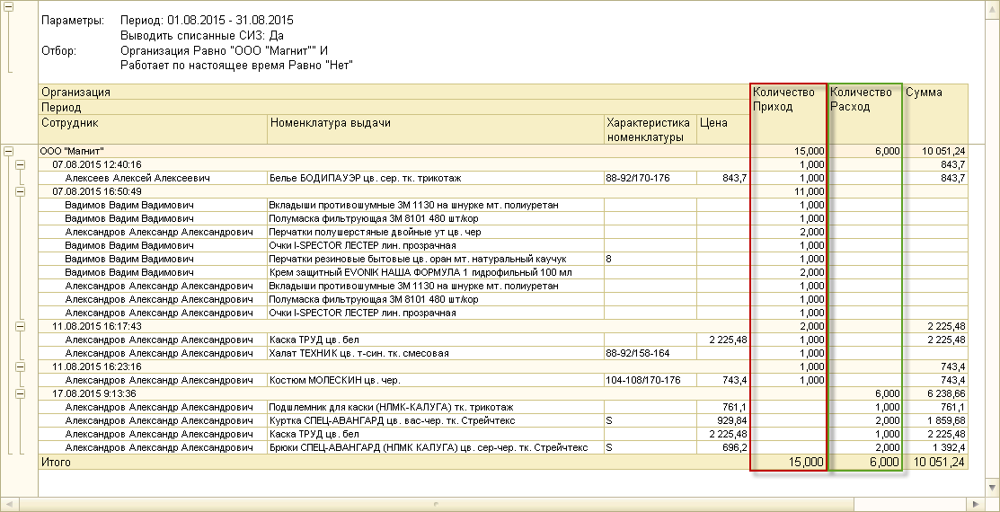
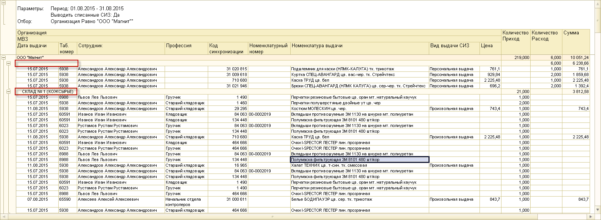
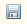
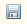

Будет сформирован отчет по всем не работающим сотрудникам организации.

В отчете будет отображено:
1. ФИО уволенного сотрудника.
2. Выданная сотруднику номенклатура, ее характеристика и цена.
3. Количество приход – количество номенклатуры, которая числится на сотруднике после увольнения.
4. Количество расход – количество возвращенной на склад номенклатуры (списанных СИЗ).
5. Сумма за всю указанную в отчете номенклатуру.
2. Выдача СИЗ по сотрудникам по МВЗ
Данный отчет выводит информацию по произведенным выдачам с указанием МВЗ, таким образом, по нему может быть установлено, какой отдел несет финансовую ответственность за поступившую номенклатуру.
Для формирования отчета необходимо зайти в раздел «Выдача», «Панель отчетов по выдаче». В открывшемся окне выбрать отчет «Выдача СИЗ по сотрудникам по МВЗ».
Примечание: панель «быстрых» настроек содержит те же параметры отбора, что и отчет, описанный в предыдущей главе.
Для формирования полного отчета по всем сотрудникам организации укажите период, организацию и проставьте флажок напротив поля «Выводить списанные СИЗ». Затем нажмите кнопку «Сформировать».
В соответствии с указанными параметрами отбора будет сформирован отчет.

Примечание: если в отчете не указано МВЗ для какого-либо сотрудника, это может означать, что для соответствующего подразделения не было проставлено МВЗ или что сотрудник был уволен (на это также указывает отсутствие данных в столбце профессия).
В отчете будут отражены:
1. МВЗ.
2. Дата фактической выдачи СИЗ.
3. Данные по сотруднику, которому были выданы СИЗ: ФИО, табельный номер и профессия.
4. Информация по номенклатуре выдачи: код синхронизации (ORA), номенклатурный номер и цена.
5. Вид выдачи: персональная, коллективная или произвольная.
6. Количество Приход – количество выданной номенклатуры.
7. Количество Расход – количество списанной номенклатуры.
8. Сумма за всю указанную номенклатуру.
3. Выдача СИЗ по сотрудникам по подразделениям
Данный отчет выводит информацию по произведенным выдачам с указанием подразделений.
Для формирования отчета необходимо зайти в раздел «Выдача», «Панель отчетов по выдаче». В открывшемся окне выбрать отчет «Выдача СИЗ по сотрудникам по подразделениям».
Для формирования полного отчета по всем сотрудникам организации укажите период, организацию и проставьте флажок напротив поля «Выводить списанные СИЗ». Затем нажмите кнопку «Сформировать». После этого будет сформирован отчет.
Отчет будет отражать те же данные, что и предыдущий, за исключение информации по МВЗ. Вместо этого, в отчете будут указаны подразделения, к которым прикреплены сотрудники.
4. Произвольная выдача
Данный отчет предназначен для просмотра информации по выдаче, произведенной не по сформированной потребности, а по заказу от отдела ТБ.
Чтобы сформировать данный отчет, зайдите в раздел «Выдача», «Панель отчетов по выдаче», и выберите отчет «Произвольная выдача».
В открывшемся окне установите период отбора данных для формирования отчета. При необходимости задайте значения параметров «Организация», «МВЗ», «Сотрудник» и «Заказчик» (сотрудник отдела ТБ, составивший заявку на произвольную выдачу). Затем нажмите кнопку «Сформировать».
В соответствии с указанными параметрами отбора будет сформирован отчет
В отчете будут отражены:
1. ФИО заказчика
2. ФИО сотрудника, которому были выданы СИЗ.
3. Данные по выданной номенклатуре: наименование, код синхронизации (код ORA), номенклатурный номер, характеристика и цена.
4. Дата фактической выдачи СИЗ.
5. Количество выданных СИЗ сотруднику (приход).
6. Стоимость выданной номенклатуры.
Чтобы распечатать сформированный отчет, нажмите кнопку  на командной панели отчета. Сохранить отчет можно с помощью кнопки .
на командной панели отчета. Сохранить отчет можно с помощью кнопки .